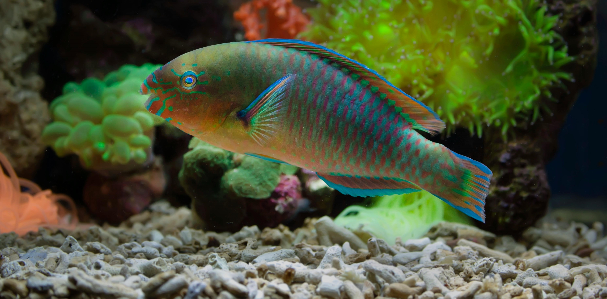

Every dollar you donate to our charity has a profound impact. Your contribution helps provide essential resources to the animals in need, whether it's food, medical care, or shelter.
When you donate to our charity, you become part of a community dedicated to making a difference. Our supporters are a diverse group of compassionate individuals who believe in the power of collective action. By joining us, you are not just giving money, you are contributing to a movement that stands for kindness, hope, and positive change. Together, we can tackle the root causes of extinction, provide emergency relief, and protect animals to build better lives. Your support helps us grow this community and amplify our impact.